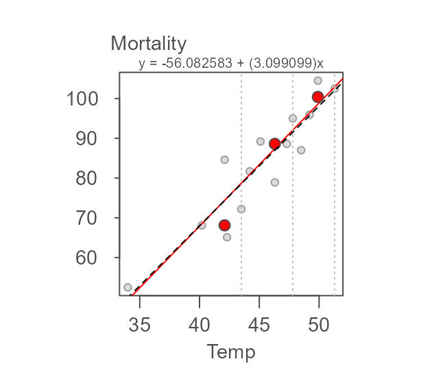
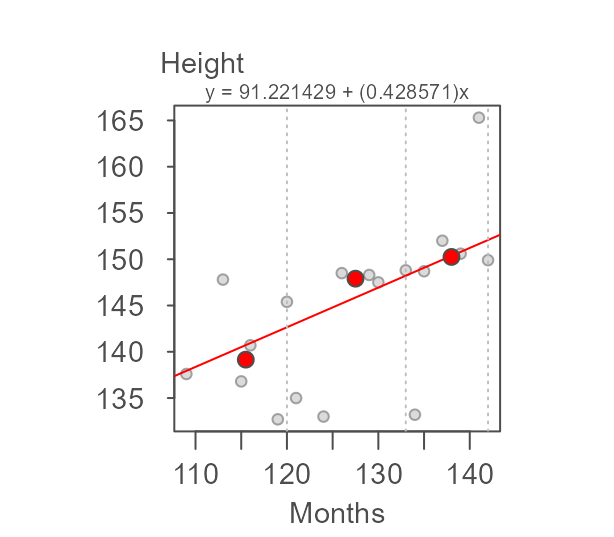
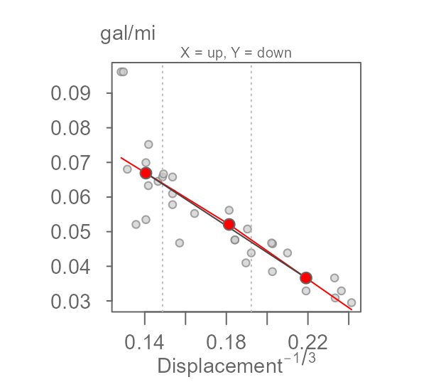
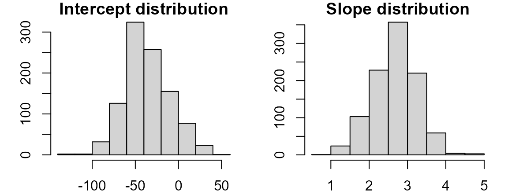

The resistant line basics
The eda_rline function fits a robust line through a bivariate dataset. It does so by first breaking the data into three roughly equal sized batches following the x-axis variable. It then uses the batches’ median values to compute the slope and intercept.
However, the function doesn’t stop there. After fitting the inital line, the function fits another line (following the aforementioned methodology) to the model’s residuals. If the slope is not close to zero, the residual slope is added to the original fitted model creating an updated model. This iteration is repeated until the residual slope is close to zero or until the residual slope changes in sign (at which point the average of the last two iterated slopes is used in the final fit).
An example of the iteration follows using data from Velleman et. al’s book. The dataset, neoplasms, consists of breast cancer mortality rates for regions with varying mean annual temperatures.

The three batches are divided as follows:
Note that the 16 record dataset is not divisible by three thus forcing an extra point in the middle batch (had the remainder of the division by three been two, then each extra point would have been added to the tail-end batches).
Next, we compute the medians for each batch (highlighted as red points in the following figure).
The two end medians are used to compute the slope as:
\[ b = \frac{y_r - y_l}{x_r-x_l} \]
where the subscripts \(r\) and \(l\) reference the median values for the right-most and left-most batches.
Once the slope is computed, the intercept can be computed as follows:
\[ median(y_{l,m,r} - b * x_{l,m,r}) \]
where \((x,y)_{l,m,r}\) are the median x and y values for each batch. This line is then used to compute the first set of residuals. A line is then fitted to the residuals following the same procedure outlined above.

The initial model slope and intercept are 3.412 and -69.877 respectively and the residual’s slope and intercept are -0.873 and 41.451 respectively. The residual slope is then added to the first computed slope and the process is again repeated thus generating the following tweaked slope and updated residuals:

The updated slope is now 3.412 + (-0.873) = 2.539. The iteration continues until the slope residuals stabilize. The final line for this working example is,

where the final slope and intercept are 2.89 and -45.91, respectively.
Implementing the resistant line
The eda_rline takes just three arguments: data frame, x variable and y variable. The function output is a list.
M <- eda_rline(neoplasms, Temp, Mortality)
M
#> $b
#> [1] 2.890173
#>
#> $a
#> [1] -45.90578
#>
#> $res
#> [1] 21.2982659 0.1398844 -2.1791908 8.8294798 -11.2485549 -7.6167630
#> [7] -0.1398844 4.7589595 -9.0092486 -2.1994220 2.7554913 -7.2676301
#> [13] -0.3907514 6.1861272 1.7971098 0.1398844
#>
#> $x
#> [1] 31.8 34.0 40.2 42.1 42.3 43.5 44.2 45.1 46.3 47.3 47.8 48.5 49.2 49.9 50.0
#> [16] 51.3
#>
#> $y
#> [1] 67.3 52.5 68.1 84.6 65.1 72.2 81.7 89.2 78.9 88.6 95.0 87.0
#> [13] 95.9 104.5 100.4 102.5
#>
#> $xmed
#> [1] 40.2 45.7 49.9
#>
#> $ymed
#> [1] 67.30 85.15 100.40
#>
#> $index
#> [1] 5 11 16The elements a and b are the model’s intercept and slope. The vectors x and y are the input values sorted on x. res is a vector of the final residuals sorted on x. xmed and ymed are vectors of the medians for each of the three batches.
You can use the output values to generate the following plot.

If you wish to add the median values to all three batches for reference, modify the code as follows:
plot(Mortality~Temp, neoplasms, pch=20)
abline(a=M$a, b=M$b, col=rgb(1,0,0,0.5))
points(x=M$xmed, y=M$ymed, col=rgb(1,0,0,0.5), pch=20,cex=2)
To see how this resistant line compares to an ordinary least-squares (OLS) regression slope, type:
plot(Mortality~Temp, neoplasms, pch=20)
abline(a=M$a, b=M$b, col=rgb(1,0,0,0.5))
abline(lm(Mortality~Temp, neoplasms),lty=2) # Regression model
The regression model computes a slope of 2.36 whereas the resistant line function generates a slope of 2.89. From the scatter plot, we can spot a point that may have undo influence on the regression line (this point is highlighted in green in the following plot).
plot(Mortality~Temp, neoplasms, pch=20)
abline(a=M$a, b=M$b, col=rgb(1,0,0,0.5))
abline(lm(Mortality~Temp, neoplasms),lty=2) # Regression model
points(neoplasms[15,], col="#43CD80",cex=2 ,pch=20)
Removing that point from the data generates an OLS regression line more inline with our resistant model. The point of interest is the 15th record in the neoplasms data frame.
neoplasms.sub <- neoplasms[-15,]
plot(Mortality~Temp, neoplasms, pch=20)
abline(a=M$a, b=M$b, col=rgb(1,0,0,0.5))
abline(lm(Mortality~Temp, neoplasms.sub),lty=2) # Regression model with data subset
points(neoplasms[15,], col="#43CD80",cex=2 ,pch=20)
Other examples
Nine point data
The nine_point dataset is used by Hoaglin et. al (p. 139) to test the resistant line function’s ability to stabilize wild oscillations in the computed slopes across iterations.
M <- eda_rline(nine_point, X,Y)
Here, slope and intercept are 0.067 and 0.133 respectively matching the 1/15 and 2/15 values computed by Hoaglin et. al.
Age vs. height data
age_height is another dataset pulled from Hoaglin et. al (p. 135). It gives the ages and heights of children from a private urban school.
M <- eda_rline(age_height, Months,Height)
Here, slope and intercept are 0.429 and 91.007 respectively matching the 0.426 slope and closely matching the 90.366 intercept values computed by Hoaglin et. al on page 137.
Not all relationships are linear!
It’s important to remember that the resistant line technique is only valid if the bivariate relationship is linear. Here, we’ll step through the example highlighted by Velleman et. al (p. 138) using the R built-in mtcars dataset.
First, we’ll fit the resistant line to the data.
M <- eda_rline(mtcars, disp, mpg)
It’s important to note that just because a resistant line can be fit does not necessarily imply that the relationship is linear. To assess linearity of the mtcars dataset, we’ll make use of the eda_3pt function (see the accompanying vignette for details on interpreting the 3-point summary function).
eda_3pt(mtcars, disp, mpg)
It’s clear from the two half slopes that the relationship is not linear. Velleman et. al first suggest re-expressing mpg to 1/mpg giving us number of gallons consumed per mile driven.
eda_3pt(mtcars, disp, 1/mpg, y.lab = "gal/mi")
This is an improvement, however the two half slopes still differ significantly. We will therefore opt to re-express the disp variable. One possibility is to take the inverse of 1/3 since displacement is a measure of volume (e.g. length3) which gives us:
eda_3pt(mtcars, disp^(-1/3), 1/mpg,
y.lab = "gal/mi",
x.lab = expression("Displacement"^{-1/3}))
Now that we have identified re-expressions that linearise the relationship, we can fit the resistant line. (Note that the grey line generated by the eda_3pt function is not the same as the resistant line generated with eda_rline.)
M <- eda_rline(mtcars, disp^(-1/3), 1/mpg)
plot(1/mpg ~ eval(disp^(-1/3)), mtcars, pch=20,
ylab = "gal/mi",
xlab = expression("Displacement"^{-1/3}))
abline(a=M$a, b=M$b, col=rgb(1,0,0,0.5))
Computing a confidence interval
Confidence intervals for the coefficients can be estimated using bootstrapping techniques. There are two approaches: resampling residuals and resampling x-y cases.
Resampling the model residuals
Here, we fit the resistant line then extract its residuals. We then re-run the model many times by replacing the original y values with the modeled y values plus the resampled residuals to generate the confidence intervals.
n <- 599 # Set number of iterations
M <- eda_rline(neoplasms, Temp, Mortality) # Fit the resistant line
bt <- array(0, dim=c(n, 2)) # Create empty bootstrap array
for(i in 1:n){ #bootstrap loop
df.bt <- data.frame(x=M$x, y = M$y +sample(M$res,replace=TRUE))
bt[i,1] <- eda_rline(df.bt,x,y)$a
bt[i,2] <- eda_rline(df.bt,x,y)$b
}Now plot the distributions,

and tabulate the 95% confidence interval.
Resampling the x-y paired values
Here, we resample the x-y paired values (with replacement) then compute the resistant line each time.
n <- 599 # Set number of iterations
bt <- array(0, dim=c(n, 2)) # Create empty bootstrap array
for(i in 1:n){ #bootstrap loop
recs <- sample(1:nrow(neoplasms), replace = TRUE)
df.bt <- neoplasms[recs,]
bt[i,1]=eda_rline(df.bt,Temp,Mortality)$a
bt[i,2]=eda_rline(df.bt,Temp,Mortality)$b
}Now plot the distributions,

and tabulate the 95% confidence interval.